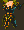
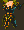
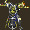
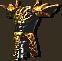
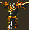
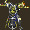
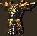
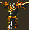
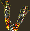
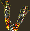

Introduction
Cet utilitaire permet de travailler sur plusieurs fichiers BAM à la fois (création, compression, etc...), ce que les autres utilitaires comme BAM Workshop et DLTCEP ne permettent pas (pour l'instant). L'outil d'exportation de masse de Near Infinity (Mass Exporter) se contente de décompresser ou de désassembler les fichiers BAM, mais seulement si vous souhaitez appliquer la procédure à tous les fichiers BAM du jeu (et ce n'est pas forcément une bonne idée).
BAM Batcher comprend les composants suivants :
- Convertir des fichiers BAM en BMP.
- Convertir des fichiers BMP en fichiers BAM d'icône d'inventaire d'objet.
- Convertir des fichiers BMP en fichiers BAM d'icône de sort.
- Convertir des fichiers BMP en fichiers BAM d'icône de description d'objet.
- Régler la position des fichiers BAM d'icône d'inventaire.
- Régler la position des fichiers BAM d'icône de sort.
- Régler la position des fichiers BAM d'icône de description d'objet.
- Décompresser des fichiers BAM.
- Compresser des fichiers BAM.
- Établir une liste de fichiers BAM et de leur dimension.
- Établir une liste de fichiers BMP et de leur dimension.
- Établir une liste de fichiers GIF et de leur dimension.
- Changer la palette de fichiers BAM à partir d'un fichier BMP.
- Convertir des fichiers BMP en fichiers BAM de paperdoll.
- Convertir des fichiers BAM d'inventaire au format EE
De plus, ce mod comprend un composant supplémentaire indépendant, la Collection de BAM de Moinesse, perdue depuis longtemps, avec deux options d'installation :
- Installer uniquement les fichiers BAM.
- Installer les fichiers BAM avec leurs objets de test.
Si tous ces composants peuvent fortement faciliter la vie des moddeurs qui travaillent sur les fichiers BAM (animations graphiques), ce sont des outils de modding - un joueur lambda ne devrait donc pas envisager de les installer. Vous trouverez plus loin une brève description de chaque composant.
Veuillez lire les instructions ci-dessous avant d'utiliser BAM Batcher. Brèves, elles sont très faciles à comprendre, et un peu de lecture pourra vous éviter son lot de souffrance ou d'incompréhension.
•Retour en haut de page
Installation
Extrayez le contenu de l'archive dans votre répertoire de jeu. Le composant principal ne modifiera ni votre jeu ni votre WeiDU log. Vous pourrez donc le lancer autant de fois que vous le voulez.
Vous pouvez extraire les fichiers de l'archive en utilisant WinRAR, 7-Zip ou tout autre programme de décompression qui gère les fichiers .rar.
Lancer setup-bambatch.exe dans votre répertoire de jeu pour utiliser l'outil.
Mac OS X
Extrayez le contenu de l'archive dans votre répertoire de jeu. Si l'extraction se passe bien, vous devriez y trouver un répertoire /bambatch. Téléchargez la version OS X de WeiDU (ou copiez l'exécutable d'un autre mod) et renommez-le setup-bambatch. Copiez-le ainsi que le fichier setup-bambatch.command dans le répertoire /bambatch du répertoire principal de votre jeu. Pour utiliser l'utilitaire, double-cliquez simplement setup-bambatch.command et suivez les instructions qui apparaissent à l'écran.
Linux
Extrayez le contenu de l'archive dans votre répertoire de jeu. Téléchargez la dernière version de Linux WeiDU et copiez WeiDU et WeInstall dans /usr/bin. Ensuite, ouvrez un terminal et placez-vous (cd) dans le répertoire de votre jeu.
Lancez WeInstall setup-bambatch dans votre répertoire de jeu pour utiliser l'utilitaire.
Retour en haut de page
Composants
Cet outil comprend deux composants principaux. Chacun contient des sous-composants qui sont décrits ci-dessous.
BAM Batcher
1. Convertir des fichiers BAM en BMP.
Ce sous-composant extrait toutes les images des fichiers BAM présents dans le répertoire /bambatch/bam. Elles seront sauvegardées au format BMP dans le répertoire /bambatch/bmp. Chaque image est renommée avec pour préfixe le nom du fichier BAM d'origine suivi d'un numéro correspondant au rang de l'image dans le fichier BAM.
Note du traducteur : par exemple, le fichier IMISC50.bam génère les images IMISC500.bmp et IMISC501.bmp.
Vous pouvez aussi utiliser cette commande pour extraire les images BMP des BAM du jeu. Pour cela, il vous suffit de modifier la première instruction "COPY" du sous-composant (aux alentours de la ligne 14) dans le fichier setup-bambatch.tp2 :
COPY - ~bambatch/bam~ ~bambatch/bam~
Pour extraire toutes les images de l'animation d'une femme elfe barde, décommentez (désactivez) la ligne précédente (tapez // en début de ligne) et saisissez ceci juste en dessous :
COPY_EXISTING_REGEXP GLOB ~^cefb.+\.bam~ ~bambatch/bam~
Il n'est sans doute pas très futé d'utiliser cette astuce pour extraire les images de nombreux fichiers BAM (comme tous les fichiers du jeu). Cependant, elle devrait fonctionner parfaitement pour extraire certains types de BAM (dont les images compressées et au codage RLE - Run-Length Encoding).
2. Convertir des fichiers BMP en fichiers BAM d'icône d'inventaire d'objet.
Ce sous-composant assemble les fichiers BMP portant le même nom présents dans les répertoires /bambatch/invlarge et /bambatch/invsmall, puis les sauvegarde en BAM d'inventaire dans le répertoire /bambatch/bam. Les fichiers BMP doivent porter le même nom à l'exception de leur dernier caractère, qui doit être impérativement la lettre "l" pour les images des grandes icônes et "s" pour celles des petites. À titre d'exemple, consultez les répertoires adéquats (fichiers iamul01l.bmp et iamul01s.bmp). Les icônes d'inventaire sont composées de deux images : la grande icône (d'une taille maximale de 64 pixels) est centrée (à la moitié de sa largeur et de sa largeur) alors que la petite (limitée à 32 pixels) est dotée d'un pivot décalé dont la position est calculée selon le différentiel entre sa taille et le maximum de 32 pixel (en général un nombre négatif).
Note du traducteur : Par exemple, une image de 28 x 28 sera positionnée aux coordonnées X = -2 Y = -2.
Les couples d'images (grande et petite) doivent aussi utiliser la même palette de 256 couleurs. Sinon, la petite icône se verra appliquer d'office la palette de la plus grande (puisqu'un fichier BAM ne comprend qu'une seule palette), ce qui peut générer résultats plutôt folkloriques.
3. Convertir des fichiers BMP en fichiers BAM d'icône de sort.
Ce sous-composant convertit les fichiers BMP contenus dans le répertoire /bambatch/spell en fichiers BAM de sorts dans le répertoire /bambatch/bam. La taille des icônes de sort est limitée à 32 pixels. Leur pivot suit les mêmes règles que celui des petites icônes d'inventaire (il est décalé du montant du différentiel entre sa taille et le maximum de 32 pixels).
4. Convertir des fichiers BMP en fichiers BAM d'icône de description d'objet.
Ce sous-composant convertit les fichiers BMP présents dans le répertoire /bambatch/desc en fichiers BAM de description dans le répertoire /bambatch/bam. Les BAM de description ne s'affichent pas correctement si la largeur de leurs images source est supérieure à 166 pixels, bien qu'elle puissent être plus hautes que larges (Note du traducteur : par expérience, leur hauteur maximum est d'un peu moins de 200 pixels). Elles sont centrées.
Note : Puisque les BAM de description ne possèdent qu'une seule image centrée, vous pouvez aussi utiliser cette commande pour créer des icônes d'objets au sol et bien d'autres fichiers BAM "divers. Cependant, n'utilisez pas ce composant, ni aucun autre, pour créer des BAM d'animation de créature, qui nécessitent un réglage spécifique de la position de chaque image : il faut s'assurer que les pieds de la créature soient parfaitement centrés dans le cercle de sélection.
5. Régler la position des fichiers BAM d'icône d'inventaire.
Ce sous-composant permet de régler la position des images des fichiers BAM d'inventaire présents dans le répertoire /bambatch/bam dont les coordonnées de position X et Y ne sont pas correctement définies (comme indiqué plus haut dans le sous-composant 2). Vous n'aurez pas besoin de l'utiliser si vous avez créé vos BAM avec le sous-composant 2, qui fixe correctement la position des images. N'oubliez-pas que l'image de la grande icône doit être plus grande que celle de la petite (puisqu'elle devrait comporter une ombre).
6. Régler la position des fichiers BAM d'icône de sort.
Ce sous-composant permet de régler la position des images des fichiers BAM de sort présents dans le répertoire /bambatch/bam dont les coordonnées de position X et Y ne sont pas correctement définies (comme indiqué plus haut dans le sous-composant 3). Vous n'aurez pas besoin de l'utiliser si vous avez créé vos BAM avec le sous-composant 3, qui fixe correctement la position des images.
7. Régler la position des fichiers BAM d'icône de description d'objet.
Ce sous-composant permet de régler la position des images des fichiers BAM de description, d'objet au sol ou divers présents dans le répertoire /bambatch/bam dont les coordonnées de position X et Y ne sont pas correctement définies (comme indiqué plus haut dans le sous-composant 4). Vous n'aurez pas besoin de l'utiliser si vous avez créé vos BAM avec le sous-composant 4 précédent, qui fixe correctement la position des images.
Note : L'algorithme de formatage ne fonctionnera pas parfaitement si vous utilisez des BAM de description composées de quatre images (comme celles de BG1). Dans ce cas, vous devrez alors saisir manuellement ces coordonnées, comme ceci :
Frame (Image) 0 : coordonnées X et Y égales aux dimensions de l'image.
Frame (Image) 1 : coordonnée horizontale égale à 0, verticale égale à la hauteur de l'image.
Frame (Image) 2 : coordonnée horizontale égale à la largeur de l'image, verticale égale à 0.
Frame (Image) 3 : coordonnées X et Y égales à 0.
8. Décompresser des fichiers BAM.
Ce sous-composant décompresse les fichiers BAM présents dans le répertoire /bambatch/bam. Il n'aura aucun effet sur les fichiers déjà décompressés (un message vous en informera).
9. Compresser des fichiers BAM.
Ce sous-composant compresse les fichiers BAM présents dans le répertoire /bambatch/bam. Il n'aura aucun effet sur les fichiers déjà compressés (un message vous en informera). Son usage est inutile si vous avez utilisé les sous-composants précédents de création ou de réglage de BAM, qui compressent automatiquement les fichiers BAM créés (comme le sont la plupart de fichiers BAM du jeu).
10. Établir une liste de fichiers BAM et de leur dimension.
Ce sous-composant génère une liste de tous les fichiers BAM présents dans le répertoire /bambatch/bam et l'écrit dans le fichier /bambatch/backup/bam_list.txt. Il contiendra pour chaque fichier, le numéro de chaque image, sa largeur et sa hauteur. Vous pouvez modifier le code pour lister la structure des fichiers BAM du jeu, comme indiqué plus haut dans le sous-composant 1.
11. Établir une liste de fichiers BMP et de leur dimension.
Ce sous-composant génère une liste de tous les fichiers BMP présents dans le répertoire /bambatch/bmp et l'écrit dans le fichier /bambatch/backup/bmp_list.txt. Il contiendra pour chaque fichier BMP sa largeur et sa hauteur.
12. Établir une liste de fichiers GIF et de leur dimension.
Ce sous-composant génère le code HTML utilisé pour afficher les images dans cette page-même et l'écrit dans le fichier /bambatch/backup/gif_list.txt. Vous pouvez le modifier pour l'utiliser dans la page lisez-moi de votre mod, ou dans n'importe quel document HTML.
13. Changer la palette de fichiers BAM à partir d'un fichier BMP.
Ce sous-composant change la palette des fichiers BAM présents dans le répertoire /bambatch/bam en utilisant les palettes des fichiers BMP (format 8-bit, 256-color) du répertoire /bambatch/palette. Le nom des fichiers BMP doit correspondre aux six (6) premiers caractères du(des) fichier(s) BAM dont vous voulez modifier la palette. Par exemple, pour les fichiers MBERG1.bam et MBERG1E.bam du répertoire /bambatch/bam, vous devez placer le fichier MBERG1.bmp dans le répertoire /bambatch/palette. Les fichiers BAM d'origine seront remplacés.
14. Convertir des fichiers BMP en fichiers BAM de paperdoll.
Ce sous-composant convertit des couples de fichiers BMP présents dans les répertoires /bambatch/paperdolltop et /bambatch/paperdollbottom, puis les sauvegarde en fichiers BAM de paperdoll (avatar affiché dans l'écran des personnages) dans le répertoire /bambatch/bam. Les fichiers BMP doivent porter le même nom à l'exception de leur dernier caractère, qui doit être impérativement la lettre "t" pour l'image de la partie supérieure ("top") et "b" pour celle de la partie inférieure ("bottom"). À titre d'exemple, consultez les répertoires adéquats (fichiers MGNLINVt.bmp et MGNLINVb.bmp). Les deux fichiers BMP doivent utiliser exactement la même palette. Chaque image doit avoir une dimension de 128 x 80 pixels pour pouvoir régler correctement sa position. Les images des fichiers BAM générés peuvent êtres rabotées ("trimmed") à l'aide d'un autre logiciel, comme BAM Resizer.
15. Convertir des fichiers BAM d'inventaire au format EE.
Ce sous-composant permet de modifier les fichiers BAM d'icônes d'inventaire présents dans le répertoire /bambatch/bam afin que les jeux améliorés (EE) affichent à la fois leurs grandes et leurs petites icônes. Ces fichiers doivent impérativement comporter deux séquences, la première représentant la grande icône et la seconde la petite. Les fichiers BAM répondant à ces caractéristiques sont modifiés et sauvegardés dans le répertoire /bambatch/bam, écrasant les originaux. Au besoin, vous pouvez récupérer les fichiers originaux dans le sous-répertoire backup.
La Collection de BAM de Moinesse
1. Installer uniquement les fichiers BAM.
Cette option d'installation copie tous les fichiers BAM du répertoire /bambatch/moinbam dans le répertoire /override de votre jeu.
2. Installer les fichiers BAM avec leurs objets de test.
Cette option d'installation copie tous les fichiers BAM du répertoire /bambatch/moinbam dans le répertoire /override de votre jeu. De plus, pour vous permettre de juger du rendu visuel de ces icônes dans le jeu, elle crée dans le répertoire /override des clones d'objets du jeu dotés de ces fichiers BAM et les ajoute au stock d'une boutique. Dans Tutu, il s'agit de l'Auverge de Château-Suif (_inn2616.sto). Dans BG2 et BGT, c'est l'échoppe de Mira (shop01.sto), la marchande située à l'est du Chapiteau sur la Promenade de Waukyne.
Bien entendu, il est préférable de ne pas installer ce composant et de créer vos propres objets en utilisant les fichiers BAM de Moinesse que vous saisirez dans le champ "Icône d'inventaire" des fichiers ITM (référence hex 0x3a). Ensuite, vous pourrez installer ces objets à l'aide de votre propre mod. À titre d'exemple, veuillez jeter un coup d'œil au fichier setup-sample.tp2 dans le répertoire /bambatch/tools.
Vous pouvez consulter la liste des 179 fichiers BAM et leurs images ci-dessous.
Outils
Le sous-répertoire /tools du mod contient plusieurs fichiers bonus pratiques qu'aucun des composants n'installe.
1. Palettes pour Paint Shop Pro.
J'ai mis en partage plusieurs palettes au format PSP que j'ai utilisées pour créer des fichiers BAM. Elles sont sans doute convertibles pour Photoshop ou dans un autre format (quoique je sois pour l'instant incapable de vous dire comment le faire).
BGDesc1.PspPalette : une palette standard pour les fichiers BAM de description.
BGDesc2.PspPalette : une version quelque peu modifiée de la précédente.
BGDesc3.PspPalette : une palette un peu plus subtile et plus sombre pour les BAM de description.
BGIcons.PspPalette : une palette standard pour les BAM d'inventaire (utilisée par Moinesse et d'autres).
BGScrollBlue.PspPalette : une palette pour créer des icônes de parchemin bleues.
BGScrollRed.PspPalette : une palette pour créer des icônes de parchemin rouges.
BGScrollWhite.PspPalette : une palette pour créer des icônes de parchemin blanches.
BGSpellBlue.PspPalette : une palette pour créer des icônes de sort bleues.
BGSpellRed.PspPalette : une palette pour créer des icônes de sort rouges.
BGSpellWhite.PspPalette : une palette pour créer des icônes de sort blanches.
2. Des modèles d'exemple
Vous pouvez utiliser ces fichiers pour créer les vôtres.
setup-sample.tp2 : un exemple de TP2 permettant d'installer un objet avec un mod.
spla-blu.bmp : un fichier BMP de référence pour créer un parchemin de sort bleu.
spla-red.bmp : un fichier BMP de référence pour créer un parchemin de rouge.
spla-whi.bmp : un fichier BMP de référence pour créer un parchemin de sort blanc.
splb-blu.bmp : un fichier BMP de référence pour créer une icône de sort bleue.
splb-red.bmp : un fichier BMP de référence pour créer une icône de sort rouge.
splb-whi.bmp : un fichier BMP de référence pour créer une icône de sort blanche.
splc-blu.bmp : un fichier BMP de référence pour créer une icône de livre de sorts bleue.
splc-red.bmp : un fichier BMP de référence pour créer une icône de livre de sorts rouge.
splc-whi.bmp : un fichier BMP de référence pour créer une icône de livre de sorts blanche.
swatches.bmp : une palette pour créer un fichier BAM à la volée.
Cette dernière comprend les couleurs suivantes :
Brun : proche de la couleur par défaut du fond de l'écran d'inventaire.
Bronze cuivré : proche de la couleur par défaut du fond de l'écran de description.
Noir (presque plein) : proche de la couleur de l'ombre des grandes icônes d'inventaire..
Rose : la couleur d'ombre bâclée de BAM Workshop BAM Workshop.
Cyan : la couleur du contour des icônes d'objet au sol.
Bleu canard : la couleur de transparence de BAM Workshop.
Vert : la couleur de transparence par défaut du jeu.
Enfin, le répertoire /tools contient un modèle de fichier BAM (template.bam) pour créer des icônes d'inventaire avec BAM Workshop. Si BAM Batcher rend BAM Workshop obsolète si l'on souhaite créer plusieurs BAM à la fois, ce dernier reste toutefois très utile pour retoucher un fichier BAM. Pour utiliser ce modèle dans BAM Workshop, supprimez son image unique éviter les problèmes de palette, puis importez vos propres images BMP.
•Retour en haut de page
Questions fréquemment posées
Q : Comment puis-je renommer mes fichiers ?
R : Il se peut que vous souhaitiez renommer les fichiers générés par BAM Batcher. Par exemple, la conversion de fichiers BAM en fichiers BMP assigne aux images un numéro correspondant à leur rang dans le fichier BAM. Vous pourriez vouloir les remplacer par "l" ou "s" pour identifier plus facilement les grandes et les petites images des icônes d'inventaire.
Pour cela, vous pouvez utiliser un utilitaire semblable à Bulk Rename Utility ou tout autre supportant les expressions régulières (regexp) - voire WeiDU. Cependant Bulk Rename est très facile à utiliser. Effectuez un clique-droit sur le répertoire bmp, sélectionnez Bulk Rename Here et saisissez les paramètres suivants dans les champs respectifs sous la case RegEx :
Si toutes les images dont le nom se termine par "0" sont de grandes icônes :
Match: (^[a-z]+)([0-9]{2})(0$)
Replace: \1\2l
Si toutes les images dont le nom se termine par "1" sont de petites icônes :
Match: (^[a-z]+)([0-9]{2})(1$)
Replace: \1\2s
Ces codes ordonnent à Bulk Rename de remplacer la première partie du nom du fichier composée de lettres par elle-même (en fait, de ne pas la changer), les deux nombres qui suivent par eux-mêmes (on ne les change pas), et de remplacer le dernier caractère du nom du fichier (un nombre) par "l" ou "s" selon le type d'image.
Q : Comment puis-je convertir des images d'un format à un autre ?
R : Vous souhaitez convertir vos fichiers GIF en BMP, ou sauvegarder cos fichiers BMP dans un format compatible avec la création de BAM. Ou bien vous souhaitez convertir vos fichiers BMP en GIF pour les afficher dans internet. La plupart des logiciels d'édition graphique gèrent ce type d'opérations en mode de traitement par lots.
Note du traducteur : Ne disposant pas de Paint Shop Pro, j'ai conservé les termes anglais des menus. Si vous travaillez sur ce logiciel, n'hésitez pas à me communiquer ces termes afin que je mette à jour cette traduction.
Avec Paint Shop Pro
Allez dans le menu File > Batch Process, sélectionner tous les fichiers GIF d'un répertoire. Puis choisissez "New Type" dans l'option Save Mode et BMP comme "Type" dans l'option Save Options, puis indiquez le répertoire dans lequel vous souhaitez sauvegarder les fichiers convertis. Pour les fichiers BMP, assurez-vous que les Options sont paramétrées sur RGB coding (par défaut dans la plupart des logiciels) plutôt que sur Run length encoding.
Avec Photoshop
Allez dans le menu Fichier > Automatisation > Changement de mode conditionnel. Choisissez Mode de la Source : Bitmap et Mode de la Cible : Couleurs indexées. Les options du Menu de Traitement par lots permettent aussi de convertir plusieurs fichiers dans un autre format.
Vous devez aussi vous assurer que vos fichiers sources sont bien au format 8-bit et 256 couleurs. Pour cela :
Avec Paint Shop Pro
Allez dans le menu Image > Decrease Color Depth > 256 Color palette. Choisissez les paramètres Optimized Octree, Error diffusion et Reduce color bleeding pour obtenir les meilleurs résultats.
Avec Photoshop
Allez dans le menu Image > Mode > Couleurs indexées. Choisissez les options Palette : Locale (Sélective), Couleurs : 256, Tramage : Sans. Il se peut que vous obteniez un meilleur résultat en utilisant d'autres options, selon la qualité de l'image source.
Si vous ne disposez pas de ces logiciels, même MS Paint peut ouvrir la plupart des fichiers image et les sauvegarder au format BMP à couleurs indexées (palette de 256 couleurs), bien que cela produira probablement des fichiers de moindre qualité. Vous feriez mieux de télécharger GIMP qui est gratuit.
Q : Comment m'assurer que mes fichiers BMP utilisent la même palette ?
R : Utilisez les procédures précédentes pour convertir votre plus grande image en couleurs indexées (256 couleurs). Puis :
Avec Paint Shop Pro
Allez dans le menu Image > Palette > Save Palette. Donnez-lui un nom et sauvegardez-la, puis chargez la petite image et allez dans le menu Image > Palette > Load Palette et choisissez l'option Nearest color matching.
Avec Photoshop
Allez dans le menu Image > Mode > Table des Couleurs. Sauvegardez-la sous le nom que vous souhaitez, puis chargez la petite image et allez dans le menu Image > Mode > Table des couleurs. Charger la palette que vous venez de sauvegarder.
Q : Puis-je utiliser un fond d'image qui ressemble à celui du jeu, comme celui des icônes affichées plus bas ?
R : Oui. il vous suffit de décommenter une ligne du fichier .tp2 (aux alentours de la ligne 131). Sinon, l'outil attribue par défaut au fond des fichiers BMP exportés la couleur de transparence du jeu (un vert flashy).
Q : Pourquoi la conversion de certains fichiers est-elle si longue ?
R : Cela arrive parfois avec des BAM encodés au format RLE (Run-Length Encoding) ou des images BMP contenant de trop nombreux pixels transparents. C'est pourquoi vous devez rogner vos images BMP aussi près que possible des bords de l'image réelle en éliminant les pixels de fond superflus. Vos fichiers seront plus petits et convertis plus rapidement sans perte de données. Ça ne pose généralement pas de problème pour la plupart des BAM du jeu qui ont été créés de cette manière par défaut.
Q : Puis-je annuler les modifications que j'ai effectuées ?
R : Si vous n'êtes pas satisfait des changements que vous avez effectués (par exemple la correction des positions des BAM), il vous suffit de restaurer les fichiers originaux qui se trouvent dans le répertoire backup. De toute façon, vous devriez supprimer régulièrement les fichiers du répertoire backup, qui s'empilent au fur et à mesure de l'utilisation de BAM Batcher. Notez qu'il est inutile de supprimer les fichiers disposant d'une extension numérique. WeiDU les génère automatiquement.
Q : Que faire en cas de message d'erreur ?
R : Assurez-vous d'avoir bien suivi les instructions relatives à l'opération que vous souhaitez faire. Si le problème persiste, ouvrez le fichier .tp2 avec un éditeur de texte, corrigez le code et envoyez-moi vos corrections ;). Oh, okay … Si vous ne savez pas comment modifier le code, postez le message d'erreur et le fichier source sur lequel vous travaillez dans le forum shsforums.net.
Q : Puis-je créer (ou modifier) des animations de créatures avec BAM Batcher ?
R : Pas pour l'instant, puisqu'elles sont vraiment trop compliquées à modifier. Elles possèdent plusieurs séquences disposant de plusieurs images, et aucune d'entre elles n'est dotée de coordonnées X et Y évidentes, si bien qu'il faut déterminer leur position manuellement. Si quelqu'un connaît une procédure efficace pour les créer (ou encore mieux, écrive le code pour le faire), je peux envisager d'ajouter un composant pour les traiter.
Q : Puis-je traduire cet utilitaire dans une autre langue ?
R : Bien entendu, et vous pouvez commencer par cette page. Plus sérieusement, elle constitue la partie la plus compliquée de la traduction. Je ne me suis pas ennuyé à créer de fichiers .tra puisque le setup ne contient que quelques lignes de références.
Note du traducteur : manifestement, c'est déjà fait !
Q : Est-ce que d'autres mods utilisent des fichiers BAM de Moinesse ?
R : Aurora's Shoes and Boots utilise une version modifiée du fichier mnboot02.bam pour les "Bottes de tous les jours" (vertes, bleues et jaunes) et les Bottes de Protection Triple. Ce mod utilise aussi une version de mnboot08.bam pour les Bottes de Bataille et leur version améliorée, les Bottes de Guerre. Il se peut que d'autres mods s'en soient servi, mais j'en doute puisque ces fichiers n'ont pas été disponibles depuis un long moment (et n'étaient pas formatés correctement à leur publication). Mais ça ne devrait pas empêcher d'autres mods de les utiliser, puisque je les ai modifiées.
Q : Ce truc dépote ! Puis-je t'envoyer une bouteille ?
R : Je veux ! De préférence un single-malt, mais je ne suis pas difficile.
Q : Ce truc, ça craint ! Puis-je t'envoyer une bouteille?
R : La même chose (et puis non, tu ne sais vraiment pas comment t'éclater avec cet outil :P).
•Retour en haut de page
Crédits
Programmation : Miloch
Mises à jour du code : Kwiat_W, pro5, Argent77, et Sam.
Traduction française : Gwendolyne
Programmes/outils utilisés pour la création :
BAM Batcher est un copyright © 2009 Miloch. Ce travail (incluant l'intégralité du code et de la documentation) est déposé sous la licence WTFPL. Faites en donc ce que vous voulez, j’en ai Rien À B.....r. Si je ne vous empêcherai pas de publier un mod utilisant ces fichiers BAM pour créer des objets +10 aux capacités grosbillesques, je ne me gênerai sans doute pas pour me moquer de vous (et si je ne le fais pas, quelqu'un s'en chargera). Ces BAM sont chic, utilisez-les pour publier un mod classe :).
•Retour en haut de page
Historique des versions
Version 2.3 : 30 Juin 2017
- Traification du setup-bambatch.tp2.
- Ajout de la traduction française.
- Ajout du composant "Convertir des fichiers BAM d'inventaire au format EE".
- Mise à jour du fichier Readme.
Version 2.2 : 15 Mai 2017
- Ajout de palettes supplémentaires dans le répertoire tools.
- Mise à jour du composant "Changer la palette de fichiers BAM à partir d'un fichier BMP".
- Mise à jour du fichier Readme.
Version 2.1 : 11 Mai 2017
- Ajout du composant "Convertir des fichiers BMP en fichiers BAM de paperdoll".
Version 2.0 : 22 Janvier 2017
- Ajout du correctif de Kwiat_W pour les BAM de sort (19 Mars 2010).
- Ajout du correctif de pro5 pour les petites images (5 Décembre 2013).
- Ajout du composant de Miloch "Changer la palette de fichiers BAM à partir d'un fichier BMP" (12 Janvier 2014).
- Ajout du correctif RLE d'Argent77 (15 Octobre 2016)
- Ajout du correctif BMP Version 4 de Sam.
- Mise à jour de WeiDU à la version 240.
- Mise à jour du composant "Établir une liste de fichiers GIF et de leur dimension" en conformité avec le format HTML5 et passage du mod à la version 2
Version 1.0 : 12 Septembre 2009
•Retour en haut de page


 

 







 
